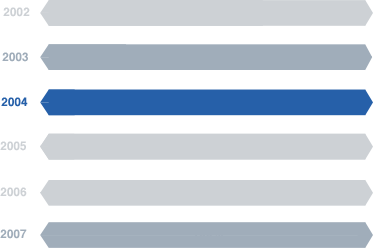

NOBRAUKUMI
| DATUMS | KILOMETRI |
|---|---|
| 01.2002. | 10000 |
| 01.2003. | 28000 |
| 01.2004. | 52000 |
| 01.2005. | 76000 |
| 01.2006. | 125000 |
| 01.2007. | 79000 |

Pievērs uzmanību 2007., 2009, 2011. gada nobraukumam
2008. gadā ir bijis salīdzinoši mazs nobraukums
Vidējais līdzīgu VW PASSAT nobraukums ir 370 000 km
2008. gadā ir bijis salīdzinoši mazs nobraukums
Vidējais līdzīgu VW PASSAT nobraukums ir 370 000 km